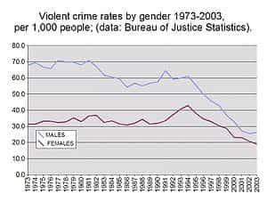

is an aspiring philosopher king, living the dream, travelling the world, hoarding FRNs and ignoring Americunts. He is a European at heart, lover of Latinas, and currently residing in the USA.


In my beta days, I dated a career girl in a big city. We dated for two years, it ended poorly, and played a large part in my finally swallowing the red pill. She was a 30 year old career woman, and a few weeks into the relationship she revealed she had never dated a guy for more than a couple of months. I soon concluded this was because she did not have a need for men in her life. Sure, she enjoyed the occasional attention, flirting, and possibly even enjoyed sex, but she did not NEED a man. Here are six ways that you may recognize men as becoming outdated in the modern dating and relationship marketplace.
The girl I mentioned had a nice career as an accountant, and was paid well enough to have her own condo in a good neighborhood overlooking many beer gardens, restaurants, and sources of entertainment for her. She was encouraged throughout high school to pursue a career in whatever field she wished, and in college was recruited by a quota-hiring firm, and likely interviewed by a feminist HR worker who quickly found a cubicle for her where she could begin filling out TPS reports.
She owned a car, a nice condo in a very desirable part of town, a trendy wardrobe, and had a generous budget for entertainment. She can (and probably will—she is approaching the wall) go the rest of her life without needing a man to provide any material things to her.
The days of a man providing a home, doing repairs, giving her food, clothing, shelter, and trinkets, are gone. A woman can graduate any public university (she attended a mediocre school) with the ability to find a career which provides her all the basic necessities. If a woman doesn’t make it into corporate America, there are a variety of special government programs—tailored specifically to and only for women—which will help pay for her housing, food, childraising, and education costs.

The West is a quite safe place, statistically speaking. A woman can go about her business, and as long as she doesn’t make any glaringly stupid mistakes, like getting pass out drunk and stumbling around in a miniskirt, or hanging out in the hood after dark, she has a very low chance of any serious harm coming to her. Most crimes are petty crimes, like theft, and with today’s prevalence of credit cards and digital currency, thieves can’t make much money by robbing strangers, other than perhaps scoring a smartphone.
The modern woman has very little risk of any serious harm coming to her, especially as compared to the past, or to women in developing countries.
The level of extremity needed to attract attention about 10 years ago
In the past, being a funny or interesting guy was a huge plus. And yes, clown game can work, to an extent. Women simply are not funny, and are often miserable to talk to, and they are naturally drawn to a man who can tell them interesting, funny, or ironic things, make them smile or blush, or simply pass the time.
But today, every woman has a flat screen TV in her apartment, with hundreds of channels of digital content beamed to it electronically, with a huge variety of entertainment choices at her fingertips, 24 hours a day, not to mention carrying a computer in her purse that offers most of the same content, as well as social media, time wasting apps and games, and attention-whoring programs like Tinder, that are available to them free of charge.
While men struggle to find any program where the male character is not portrayed as a useless idiot, there are dozens of programs created specifically for feminists, not to mention trannies or gays. Also, many women’s friends are also single, and they are perfectly content to go out with the girlfriends and do the same old thing every weekend, no man needed.
Many modern women are brainwashed against raising a family. For those who do want children, sex is easily and readily available at any time of day by sliding her finger across a custom engineered and well-designed screen of scratch-resistant capacitive glass approximately one inch to the right. They can turn a hookup into a single parent family, and often can force the sperm donor to contribute tens of thousands of dollars in payments while she gets to raise this child alone. Indeed, according to Johns Hopkins, the majority of children (57%) born to millennials are bastards.
Almost every woman today has a vibrator at home, that can operate whenever, wherever, and for as long or short, at the perfect intensity, at the touch of a button. And if a woman does prefer the old fashioned regular rogering, she can obtain that through anonymous one night stand sex, where she will beg to be choked, slapped, spit on, or worse, and then can go home, never to think about or call the man again.
I ran into a female friend this weekend, and told her about a fun event happening that she expressed interest in. She asked for some details and I said, if you want to go, I’ll text you the details later (I am somewhat old fashioned and do not carry a telephone with me 24/7). She replied, “Oh, no need, I will just look up the details on google.”
That’s exactly what she did, and she ended up attending the event. She is an independent, strong “career girl” who does not need a man to even do her a favor of texting her an address, because she literally has no need for men. I should mention that despite being physically attractive, she has been single for as long as I’ve known her, and has expressed interested in artificial insemination because she can’t find the right man, but wants to have a family.
Contrast that with one of my Latina women who regularly message me saying “Amor, necesito tu ayuda” (Baby, I need your help). And I happily oblige.
The fact is women today do not NEED a man. When you do not NEED something, you do not value or treasure it. This explains why men are disrespected and ignored in modern society. Game can be used to extract sexual favors from women, or even enter into mini-relationships, but the fact is, a woman who does not need you can never truly devote herself to you.
Patriarchy established clear roles and boundaries for the sexes. The men appreciated and admired the woman’s feminine traits. The woman adored and relied on the man for fulfilling his duties. If you decide to marry, it had better be a woman from a traditional, conservative household, and those are all but nonexistent in the west. Until men are needed again (financial collapse, war, utter breakdown of infrastructure), they will continue to be ignored and disrespected.
Read More: 6 Ways Liberal Democracy Destroys The Goodness Of Humanity